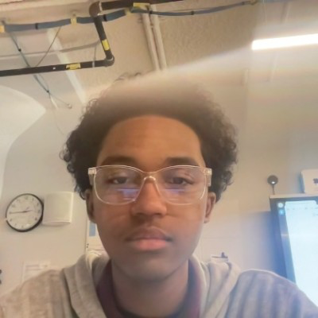

L&P
Liam Pustam
Hello there welcome to my website, this page is very useful if your looking for me, it has an about me page, my contact information and some projects I have worked on in the past.
1. Biography:
From a young age, I was fascinated by technology. My first obsession was with phones—how they worked, what made them run, and why they were so important in everyday life. That early curiosity quickly grew into a passion for computers, the internet, and everything related to technology.
When I entered high school, I continued to explore this interest and, by my freshman year of college, I joined a computer science class. There, I was introduced to coding for the first time, which opened up a whole new world of possibilities.
During my second year of high school, I came across the STEAM application program. While exploring it, I discovered full-stack development, and it immediately clicked with me. I knew right away that this was the path I wanted to pursue.
Technology has always been more than just a hobby—it’s a field that inspires my creativity, curiosity, and drive to learn more every day.
2. My contact information:
Phone number: (347) 358-8076
Email Address: liamp@brooklynsteamcenter.org @
3. Certifications:
a. HTML and CSS
b. Network Secruity
Resources
-
1. Resume
-
LinkedIn
-
Github